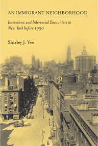

How the crowded neighborhoods of New York's Lower East Side gave rise to cross-racial and cross ethnic bonds before 1930
How the crowded neighborhoods of New York's Lower East Side gave rise to cross-racial and cross ethnic bonds before 1930


 How the crowded neighborhoods of New York's Lower East Side gave rise to cross-racial and cross ethnic bonds before 1930
How the crowded neighborhoods of New York's Lower East Side gave rise to cross-racial and cross ethnic bonds before 1930

|  |
An Immigrant NeighborhoodInterethnic and Interracial Encounters in New York before 1930Shirley J. Yeepaper EAN: 978-1-59213-128-0 (ISBN: 1-59213-128-X) |
"Yee’s study of the ethnoracial dynamics of lower Manhattan in this [pre-1930] period is well conceived, and well written. She convincingly dispels the myth of isolated ethnic enclaves populating the neighborhoods of what are commonly referred to as Chinatown and the Lower East Side by presenting a wealth of evidence to demonstrate the interweaving of the lives of people from differing cultural backgrounds. An Immigrant Neighborhood provides a lovely balance of interpretive material and the reconstruction of individual life stories."
—Marilyn Halter, Boston University, author of Shopping for Identity: The Marketing of Ethnicity and Between Race and Ethnicity: Cape Verdean American Immigrants, 1860–1965
Examining race and ethnic relations through an intersectional lens, Shirley J. Yee's An Immigrant Neighborhood investigates the ways that race, class, and gender together shaped concepts of integration and assimilation as well as concepts of whiteness and citizenship in lower Manhattan during the late nineteenth and early twentieth centuries.
In contrast to accounts of insulated neighborhoods and ethnic enclaves, Yee’s study unearths the story of working-class urban dwellers of various ethnic groups—Chinese, Jews, Italians, and Irish—routinely interacting in social and economic settings.
Recounting the lived experiences in these neighborhoods, Yee's numerous, fascinating anecdotes—such as the story of an Irishman who served for many years as the only funeral director for Chinese residents—detail friendships, business relationships, and sexual relationships that vividly counter the prevailing idea that ethnic groups mixed only in ways that were marked by violence and hostility.
Excerpt available at www.temple.edu/tempress
"Abundant evidence combed from a variety of documents and augmented by oral histories shows the considerable extent to which members of diverse groups interacted with one another in familial, commercial, and even mortuary matters. Related activities involved not just immigrants but also native-born whites and African Americans. Appreciation of this blurring of presumed social boundaries will broaden historical understanding of Gilded Age/Progressive Era immigration and ethnic history. Summing Up: Recommended."
—CHOICE
"In this highly readable book, [Yee] explores the relationships that developed across ethnic lines in lower Manhattan neighborhoods during the late nineteenth and early twentieth centuries.... An Immigrant Neighborhood provides a window onto economic and social interactions among immigrants in different ethnic groups. For this reason, the book will be of interest not only to those concerned with the immigrant past but also to scholars seeking to understand better the nature and consequences of interethnic relations in immigrant neighborhoods today."
—Journal of American History
"Yee’s analysis illustrates how working-class immigrants of diverse backgrounds often crossed the borders of well-established ethnic neighborhoods. The book is well researched, particularly in secondary sources; the author’s argument is cogent and her style is clear."
—American Historical Review
"An Immigrant Neighborhood is an excellent addition to historical studies in community and urban racial and ethnic relations. It provides us with rich stories of individual daily lives in pre-1930 New York’s Lower Manhattan and with various analyses of class, ethnicity, race, and gender. It would be particularly useful for an advanced undergraduate course in American studies, ethnic studies, history, or sociology, and it would also be appropriate for a graduate course.'"
—Contemporary Sociology
"[A]n insightful and new look at the neighborhoods of lower Manhattan in the late nineteenth century to the early 1930s.... [H]er purpose is to look for meaningful and daily levels of interaction that showed the importance of a networked community where cooperation was a necessity. In this goal, she succeeds very well."
—Journal of American Ethnic History
"Shirley J. Yee, in her book, An Immigrant Neighborhood, attempts to go beyond [the] imagined boundaries to explore the many ways in which people of different ethnic, racial, and religious backgrounds living in southern Manhattan (her preferred term over Lower East Side) lived, worked, and interacted with each other…. To a large degree, Yee succeeds in this endeavor…. [She] reveals the complex web of commercial relationships and dependencies that marked the lives of most Lower East Side entrepreneurs.... Yee also adds to our understanding of the sources of these interactions by linking them to wider legal, cultural, and economic factors at play between 1880 and 1930.”
—H-SHGAPE
Acknowledgements
Introduction
1. Forming Households, Families, and Communities
2. Building Commercial Relations
3. Sustaining Life and Caring for the Dead
4. Mixing with the Sinners: The Anti-vice Movement
5. On (Un)Common Ground: Religious Politics in Settlements and Missions
Conclusion
Notes
Bibliography
Index
Illustrations follow page 122
Shirley J. Yee teaches in the Department of Gender, Women, and Sexuality Studies at the University of Washington. She is the author of Black Women Abolitionists: A Study in Activism, 1828-1860.
American Studies
Immigration Studies
History
© 2015 Temple University. All Rights Reserved. This page: http://www.temple.edu/tempress/titles/1769_reg.html.